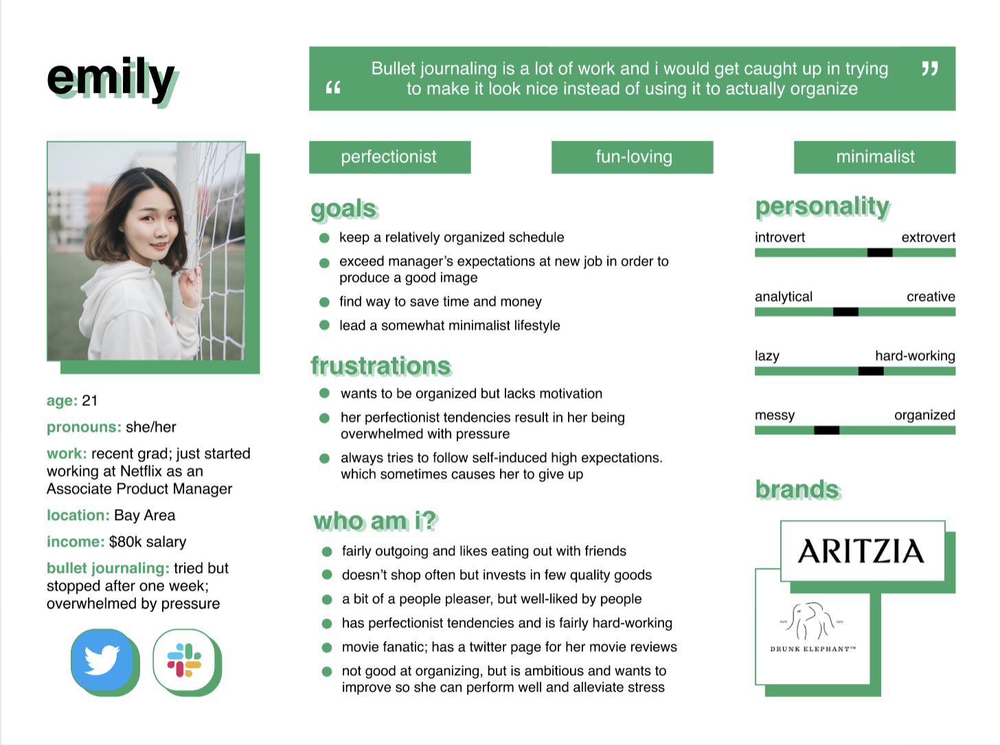
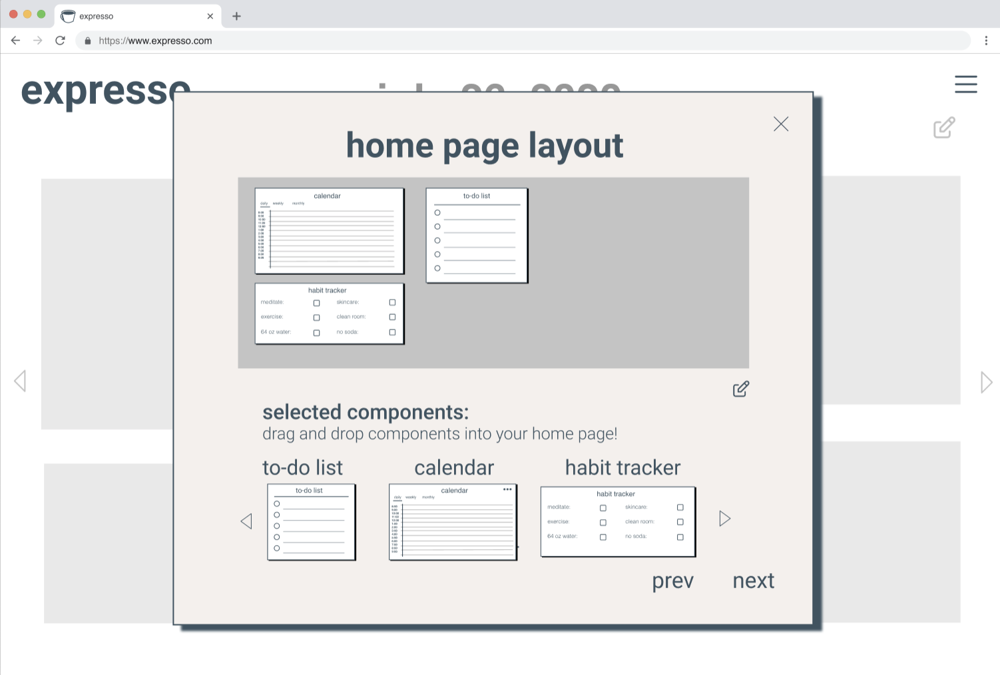
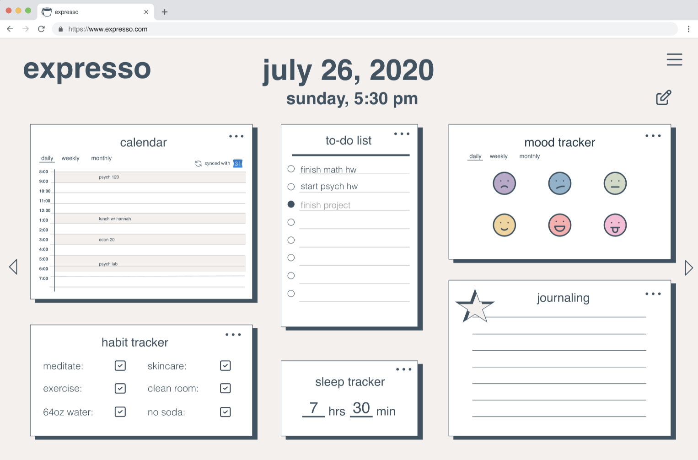

To ideate and build a product from scratch; we decided on building a digital platform to aid students or working individuals in organization and planning.
The project culminated in a pitch deck in which we showcased our product to the panel brought together by BruinLabs, an organization based at UCLA.
Worked on a team of 5 students from various schools for the duration of about two months during Summer 2020. My primary focus as the technology and creative role on the team was creating the user personas, gathering user feedback, and designing the prototype for the product. Other roles included marketing, finance, and project management.
Ideation and planning: brainstormed ideas; sent out google form to various school campuses and other platforms to gauge interest in the realm of bullet journaling and organization.
User personas, stories and feedback: created user personas and user stories based on google form responses.
User personas, maps and feedback: created user personas, journey maps, and value propositions based on google form responses.
Prototype and user testing: Created low-fidelity prototype of digital organization app with sketched out wireframing. Collected feedback on various design aspects in order to create a better high-fidelity prototype (through figma). The high-fidelity prototype was the main product shown in the process of user testing, and to showcase the product during the pitchdeck hosted by BruinLabs.
Below area few snapshots of the various steps of the design process!
  